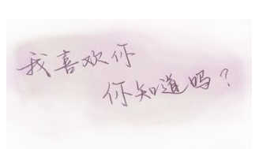

只能陪你走过一段网路

他们相遇之前，两个人的生活井水不犯河水。女孩子的男朋友在一年前出国时，两人水到渠成的分手了。男孩子也曾喜欢过同年级的一个女孩，却只不过是淡淡的暗恋。
后来某一个夜里，男孩子因为刚考完GRE，一时心里空落落的，无事可做，便坐在电脑前连接到本校的bbs，环顾四方没有熟悉的人在线，他便随意的点击了一个名字，送出讯息。于是他和她相遇了。
他们互相聊了几句，聊得不深，但很开心。两人都没在意，只当有多了一个网友。他们把对方列入好友名单，此后在线相遇，总会聊几句.
男孩子喜欢玩MUD，女孩子本是很抵触这种网上游戏的，她怕上瘾。男孩子玩MUD是个高手，在其中扮演一个剑胆琴心的巫师，名叫Aha。Aha不停得讲MUD的种种趣事。因为大四的时光无限脆弱，人太有空了，女孩子终究答应了Aha，跟他去玩MUD，扮演一个名叫Van的女角。
在游戏中Aha有情有意，他尽心尽力的教Van如何立身求发展，在每一个危险关头赶来救她。Van喜欢这虚拟世界中一个人对她事无巨细的关怀。后来他们在MUD中要结婚了，两个人用系统设置好的语言表达着爱情。男孩打了一百零一次求婚诺言，满屏满屏都是他的话。他说，Van，我在生活中做不到的，我在MUD里都要为你做到。一切如箭在弦上，两人决定在现实中见一面。
他们约在一家咖啡店见面。在隐约的光线中，女孩明媚清爽，谈吐动人，一笑有如春风。他吁了一口气，她的聪明天真和他游戏中即将迎娶的女子是丝丝入扣的。他想他喜欢她。女孩也很喜欢男孩那张略带叛逆气质却眉目分明的脸。他们谈网络谈生活一直聊到很晚，一直笑着。
他们在MUD中结婚了，游戏中很多玩家都来致贺，巫师的婚礼格外欢天喜地。
女孩发现自己日渐沉迷于游戏，可以不吃不喝在电脑前坐一天。而男孩也为了玩MUD整天旷课。他们开始坐在一个机房并排的两台机器上上机。有一次在一个游戏环节，男孩为了挽救女孩的一次操作失误，违反巫师权限，改了女孩的游戏记录。只是一点点，但在游戏中与Aha早有宿怨的仇家便开始大张旗鼓连篇累牍的攻击他。一时间，MUD里风起云涌。后来，Aha选择了上线人数最多的时候，面对众人说，让争吵结束吧，我自杀，但不要怪Van。
Van没有想到酷爱游戏的Aha居然这样认真，面对这屏幕上跳出的一行行关于Aha自杀的评论，她开始掉泪，一滴，两滴，但只有两滴就干了。她也打下了suicide(自杀)，说，我在这里也没有意思了，我陪他一起去吧。
走出机房的门口，男孩看着女孩忧郁的脸说，我们是不是角色感太重，是不是玩得太认真了？女孩笑笑说，我只能在学校呆一个多月了，我也只能陪你走这一段网路了。
巫师殉情。这成了那个MUD游戏运转以来最凄美的事情，开始广为流传。
有一天女孩醒来躺在床上，阳光打在她的脸上，刺痛了她的眼睛。她突然明白必须告诉自己要真实的面对生活了。是的，在游戏里他们所拥有的人、事以及一尘不染的心情，任将来再怎么不惜代价模仿也好，重新开始也好，都是不可能找回的了。那天她站在灰蒙蒙的路上，望着站在街那边等她的男孩，明白一切都无法驻留，她难过的在街上弯下了腰。
女孩毕业离校的那天，最后一个小时她去了机房，上站之后Aha的名字赫然在目。她轻触键盘打下MUD里常用的语句：
chat* cry aha(van靠在aha的胸前开始流泪。)
此时屏幕上跳出了另一行字：
chat* love van(aha永远爱着van，永不忘记)
女孩站起身，而在机房的另一头，男孩也站了起来。两张脸，泪水，一滴，两滴。
转给0-4人：你的生活会悄悄起变化
转给5-9人：生活如你所愿
转给9-14人：接下来的三个星期你会有惊喜的发现
转给15人以上：你的梦想终会成真!